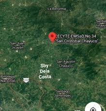
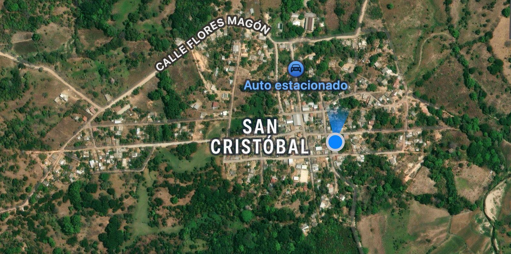

Nombre oficial
Nombre oficial
San Cristóbal es el nombre completo de la localidad.
 Gentilicio
Gentilicio
Los habitantes de San Cristóbal son llamados Tobeños.
 Ubicación geográfica
Ubicación geográfica
San Cristóbal se encuentra en el estado de Oaxaca, en la región de la Costa, dentro del Distrito de Jamiltepec.
Coordenadas: 16°24′N 97°54′O. Colinda con municipios mixtecos-costeños.

 Significado del nombre
Significado del nombre
San Cristóbal: Patrón de los viajeros.
 División territorial
División territorial
Cabecera municipal: San Agustín Chayuco. Tiene rancherías y calles con nombres históricos.

 Historia y antecedentes
Historia y antecedentes
Origen prehispánico con raíces mixtecas. Evangelizado en la colonia. Conserva muchas tradiciones indígenas.